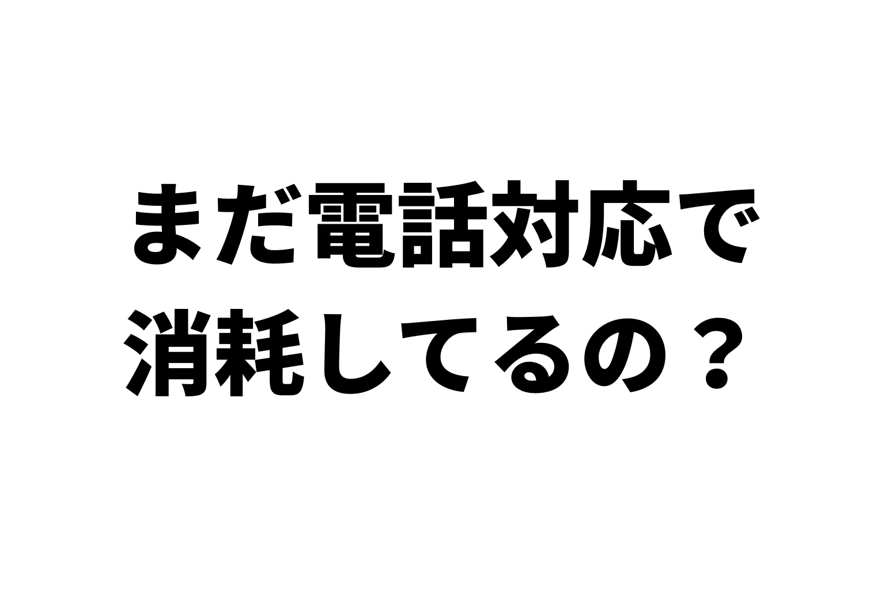
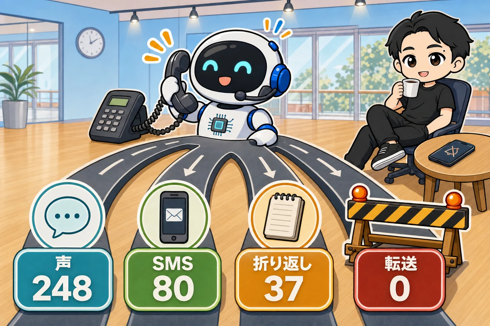

レンタルスペースを運営している人へ。
電話の対応、ほんとうに大変ですよね。
こんなことありませんか？
・休日に出かけているときに「場所が分からない」
・ジムでトレーニングしているときに「延長したい」
・寝ているときに「暗証番号が分からないのですが⋯」
今日は、お店の電話に、もう自分で出なくてよくなる方法を書きます。
ぼくは、自社運営の12部屋の電話を050の番号1つで受けています。
出ているのは、AIです。
入れた質問と答えは、365件。
使いはじめて2週間で、かかってきた電話は18件。
人に転送した電話は、0件です。
出典: アイブリーの管理画面(2026年10月8日・ぼくのアカウント)
今日は、そのやり方を5つのステップで書きます。
- お客さまの質問を、AIに集めさせる
- 店舗ごと・予約サイトごとに分ける
- 答え方を3つに分ける
- 勝手に人につながる道を、ぜんぶふさぐ
- AIの対応は、LINEとメールで見る
最後に、レンスペの電話でよく来る質問と答えのひな形もつけました。
7つのカテゴリに分けてあるので、あなたの店の値に変えれば、そのまま使えます。
電話番が、いなくなった
ぼくのお店では、ダンスのレンタルスタジオ5部屋、撮影スタジオ4部屋、会議室3部屋。
この12部屋の電話を、スタッフさんにとってもらっていました。
2026年9月、そのスタッフさんに、別の仕事が決まりました。
日中の電話に出られない日が出る、という連絡でした。
電話番がいないと、鳴るのはぼくの携帯です。
「鍵が開かない」「延長したい」「Wi-Fiはありますか」。
レンスペの電話は、時間を選ばずに鳴ります。
そこで9月24日に、AIの電話自動応答サービス「アイブリー(IVRy)」を契約しました。【PR】
出典: アイブリー公式サイト(2026年10月8日)
最初に決めたのは、1つだけです。
かんたんに人に転送される作りなら、入れる意味がない。
答えられない質問が来ても、ぼくの携帯は鳴らさない。
AIが用件を聞いて、ぼくはあとから折り返す。
これを前提に、作っていきました。
ステップ1: お客さまの質問を、AIに集めさせる
まずは、お客さまが電話で聞きそうなことを、ぜんぶ集めます。
集めるのも、AIです。
ぼくは、こういう資料をAIに読ませました。
- 予約サイトの紹介文・注意事項・予約確定メッセージ
- 公式サイトの料金・ルール・よくある質問
- 予約サイトのお客さま向けヘルプ(延長やキャンセルのやり方)
- いままでお客さまから来たメッセージ
集まった資料は、792件。
そこからAIに、質問と答えの一覧を作ってもらいました。
最初の一覧は、380件です。
使ったプロンプトは、これです。
あなたはレンタルスペースの電話の自動応答の担当です。
下に、ぼくの店の資料を貼ります(予約サイトの紹介文・注意事項・予約確定メッセージ、公式サイト、お客さまから来た質問)。
やってほしいこと:
1. お客さまが電話で聞きそうな質問を、できるだけたくさん書き出してください
2. 1つずつ、「店舗ごとに答えが違うもの」「予約サイトごとに答えが違うもの」「全店同じもの」に分けてください
3. 1つずつ、資料に書いてある答えを、電話で聞いてわかる1〜2文にしてください。資料にないものは答えを作らず「情報なし」と書いてください。暗証番号・Wi-Fiのパスワード・お客さまの名前は、答えに書かないでください
4. 資料どうしで書いてあることが違うもの(定員・料金・ルールなど)は、答えを作らず「食い違い」として別に書き出してください
5. 答え方を「声で答える」「ショートメッセージで送る」「用件を聞いて折り返す」の3つから選んでください。人に転送する答え方は使わないでください
店の情報:
- 部屋の数: 【あなたの店の値(うちは 12部屋)】
- 使っている予約サイト: 【あなたの店の値(うちは 公式の予約を入れて6つ)】
資料:
(ここに貼る)
ここで、思わぬものが見つかりました。
資料どうしで、書いてあることが違うんです。
例えば、定員。
同じ部屋なのに、ある予約サイトでは10名、別の予約サイトでは12名になっていました。
ほかにも、お酒を飲めるかどうか、キャンセル料が無料になる日数など、食い違いが17件ありました。
答えが2つあると、AIは答えを作れません。
なので、ぼくが正解を決めて、予約サイトと公式サイトの掲載を15か所、AIに直してもらいました。
電話の準備のつもりが、掲載の見直しにもなりました。
なお、予約サイトなどの規約で、AIでの自動化が制限されている可能性があります。
使うかどうか・どこまで任せるかは、各サービスの規約を確認したうえで自己責任でお願いします。
ステップ2: 店舗ごと・予約サイトごとに分ける
レンスペの電話の答えは、2つの軸で変わります。
- 店舗で変わるもの: 入り方、道順、設備、ゴミ、退室のしかた
- 予約サイトで変わるもの: 延長、時間の変更、キャンセル、返金、領収書
例えば、「延長したい」。
スペースマーケットなら、お客さまが予約詳細から、自分で延長できます。
カシカシは、お客さまの側からは延長できません。
同じ質問でも、予約したサイトによって答えが違うんです。
なので、Q&Aの名前を「延長したい/カシカシ」「入り方がわからない/◯◯店」の形にしました。
アイブリーがすすめている名前のつけ方です。
こうしておくと、AIが「どちらのサイトからご予約ですか」と聞き返してくれます。
出典: アイブリーの管理画面(2026年10月8日・ぼくのアカウント)
予約サイトごとの質問は、1つのサイトにつき13項目です。
延長、時間の変更、キャンセル、キャンセル料、返金、領収書、請求書、支払い方法、人数の変更、予約の確認、予約リクエストの返事、サイトの問い合わせ先、口コミ。
食い違いを片づけて、同じ答えの質問をまとめたら、365件になりました。
入れられる上限は400件なので、まだ余裕があります。
ステップ3: 答え方を3つに分ける

アイブリーの答え方は、5つから選べます。
音声案内、電話転送、SMS送信、音声録音、AI受付です。
出典: アイブリーの管理画面(2026年10月8日・ぼくのアカウント)
ぼくが使っているのは、このうち3つ。
「用件を聞いて折り返す」には、AI受付を使っています。
365件の答え方は、こうなりました。
| 答え方 | 件数 | 使うとき |
|---|---|---|
| 声で答える | 248件 | 1〜2文で言いきれること(設備・ルール・手続きのやり方) |
| ショートメッセージで送る | 80件 | 住所・地図・入り方など、目で見たほうがわかること |
| 用件を聞いて折り返す | 37件 | その場で決められないこと(前の人がまだいる・故障・忘れ物・急ぎ) |
| 人に転送する | 0件 |
コツは、声は短く、くわしいことはショートメッセージです。
電話で住所や手順を長く読み上げられても、お客さまは覚えられません。
例えば、「住所を知りたい」。
声では「◯◯駅から徒歩◯分です。地図をショートメッセージでお送りします」まで。
地図のURLは、ショートメッセージで送ります。
ショートメッセージは、70文字ごとに1通15円です。
1つ、失敗も書いておきます。
ショートメッセージで送るリンクに、短縮URL(長いURLを短くするサービス)を使っていました。
10月2日、その短縮URLのサービスが止まって、リンクが開かなくなりました。
すぐに元のURLに差し替えましたが、お客さまに送る文には、短縮URLを使わないほうがいいです。
ステップ4: 勝手に人につながる道を、ぜんぶふさぐ
ここが、いちばん大事です。
Q&Aを365件入れても、それだけでは転送ゼロになりません。
電話の自動応答には、設定しないと、勝手に人に転送される道があるからです。
アイブリーのヘルプをAIに読ませて見つかったのは、この5つでした。
- 用件が2回聞き取れない → 転送用の携帯番号へ
- AIの受付で3回聞き取れない → 「担当者を呼び出しますか」→ 転送
- 「担当者と話したい」のQ&A
- ホワイトリスト(登録した番号は、いつでも転送)
- システムの障害のとき
1・3・4は、行き先を「用件を聞いて折り返す」に変えるか、オフにしました。
例えば、「担当者と話したい」と言われたら、AIはこう答えます。
「担当者はいまお電話に出られません。ご用件をうかがって、担当者から折り返します。」
営業時間も、0時から24時にしました。
営業時間外の設定が、使われないようにするためです。
2と5は、転送用の携帯番号に行きます。
ここだけは、最後の受け皿として携帯番号を残しています。
でも、使いはじめてからの18件で、転送は1件もありません。
出典: アイブリーの管理画面(2026年10月8日・ぼくのアカウント)
ステップ5: AIの対応は、LINEとメールで見る
電話に出るのはAIです。
でも、何があったかは、ぼくもちゃんと見ています。
AIが対応した内容は、LINEとメールに届く設定にしました。
出典: アイブリーの管理画面(2026年10月8日・ぼくのアカウント)
届いた内容を読んで、必要なときだけ、ぼくから電話をかけます。
こちらからかけるので、お客さまの電話がぼくの携帯につながることはありません。
折り返す37件の中には、急ぎのものもあります。
- 火事・煙が出ている
- 水漏れしている
- けが・体調が悪い
- 閉じ込められた・トイレの鍵が開かない
- 近所からの苦情
この5つは、AIが店舗名・名前・状況を聞きとってくれます。
LINEで見たら、すぐにぼくから電話します。
出典: アイブリーの管理画面(2026年10月8日・ぼくのアカウント)
火事とけがのときは、AIが最初にこう言います。
「すぐに119番に通報してください。」
ぼくに連絡がつくのを待つより、そのほうが早いからです。
ひな形: レンスペの電話でよく来る質問と答え(7つのカテゴリ)
ぼくの365件を、7つのカテゴリにまとめました。
- 入り方・鍵
- 場所・道順
- 設備・ルール
- 予約の手続き(予約サイトごと)
- 利用中のトラブル
- 急ぎ
- 予約の前・そのほか
【あなたの店の値(うちは◯)】のところを、あなたの店の値に変えて使ってください。
[声]=声で答える、[SMS]=ショートメッセージで送る、[折り返し]=用件を聞いて折り返す、です。
電話は、だれでもかけられます。
暗証番号やWi-Fiのパスワードの数字は、Q&Aに直接書かないでください。
電話に出たときの、最初のあいさつ
「お電話ありがとうございます。【あなたの店の値(店の名前)】の自動応答です。ご用件を、店舗の名前といっしょにお話しください。たとえば、【あなたの店の値(◯◯店)】の入り方、のようにお話しください。」
用件がわからなかったときの一言は、これです。
「申し訳ありません。そのご質問には、このお電話ではお答えできません。ご用件をうかがい、担当者から折り返します。」
① 入り方・鍵
- 「入り方がわからない」→ [SMS]「入り方の案内を、ショートメッセージでお送りします。」
送る中身: 【あなたの店の値(予約確定メッセージと同じ入り方の案内など。番号まで送るかは店ごとに決める)】 - 「キーボックスが開かない」→ [声]「ダイヤルを番号にぴったり合わせてから、【あなたの店の値(うちは ふたを手前に引いて)】ください。」
- 「鍵が入っていない」→ [声]「前のご利用者が、まだ中にいることがあります。まず、入口のドアをノックして確認してください。」
それでも開かないとき: 【あなたの店の値(予備の鍵の案内か、折り返し)】 - 「暗証番号が変わった?」→ [声]「予約確定メッセージに書いてある番号が、最新です。」
- 「早く着いた」→ [声]「入室は、予約時間になってからお願いしています。建物の入口や階段で、長く待ったり、大きな声で話したりするのはご遠慮ください。」
- 「鍵を持って帰ってしまった」→ [SMS]「お近くでしたら、店舗に戻ってご返却ください。遠い場合は、郵送でお願いします。返送先をショートメッセージでお送りします。」
② 場所・道順
- 「住所を知りたい」→ [SMS]「【あなたの店の値(◯◯駅から徒歩◯分)】です。地図をショートメッセージでお送りします。」
- 「道がわからない」→ [SMS] 駅の出口からの道順を1〜2文+地図のURL
- 「駐車場はある?」→ [声]「駐車場はありません。電車などの公共交通機関でお越しください。」【あなたの店の値】
- 「自転車で行きたい」→ [声]【あなたの店の値(うちは 専用の駐輪場はありません。店によって停めていい場所を案内)】
- 「何階?エレベーターは?」→ [声]【あなたの店の値(◯階・エレベーターの有無)】
③ 設備・ルール
- 「どんな設備がある?」→ [声]「【あなたの店の値(うちは ダンスの店なら、大きな鏡・40インチのモニター・Bluetooth対応の音楽プレーヤー・三脚・ヨガマット)】があり、すべて無料です。」
- 「Wi-Fiは使える?」→ [声]「無料のWi-Fiが使えます。つなぎ方は、お部屋の中に掲示してあります。」
- 「何人まで使える?」→ [声]「【あなたの店の値(うちは 12名さま)】までご利用いただけます。」
- 「飲食はできる?」→ [声]「飲食はできます。においの強いものは控えて、食べたあとは換気をお願いします。」【あなたの店の値】
- 「タバコは吸える?」→ [声]「お部屋の中は禁煙です。」【あなたの店の値(建物の敷地も禁煙か)】
- 「土足で使える?」→ [声]「土足は禁止です。床にあとがつく靴も使えません。」
- 「ゴミはどうする?」→ [声]「ゴミや持ち込んだ物は、すべてお持ち帰りください。残していかれた場合は、処分の費用をいただきます。」【あなたの店の値】
- 「大きな音を出していい?」→ [声]【あなたの店の値(うちは 太鼓など響く楽器や、音量の大きな楽器は不可。わからないときは予約の前に相談を)】
- 「スタッフはいる?」→ [声]「スタッフは常駐していない、無人のお店です。」
- 「退室のしかた」→ [声]「【あなたの店の値(うちは 掃除機をかけて、備品を元の場所に戻し、エアコンと照明を消して)】ください。」
④ 予約の手続き(予約サイトごと)
同じ質問を、使っている予約サイトの数だけ作ります。
Q&Aの名前は「延長したい/◯◯サイト」の形です。
- 延長したい
- 時間を変えたい
- キャンセルしたい
- キャンセル料はいくら
- 返金はいつ
- 領収書がほしい
- 請求書・見積書がほしい
- 支払い方法
- 人数を変えたい
- 予約を確認したい
- 予約リクエストの返事が来ない
- 予約サイトに問い合わせたい
- 口コミを書きたい
答えは、各予約サイトのお客さま向けヘルプから作ります。
例えば、スペースマーケットの場合はこうです。
- 「キャンセルしたい」→ [声]「予約詳細の下にある、予約のキャンセルから、ご自身で手続きしてください。一度キャンセルすると取り消せません。」
- 「時間を変えたい」→ [SMS]「予約詳細の下にある、予約変更リクエストから送ってください。こちらで承諾すると反映され、差額は追加の決済か返金になります。」
- 「領収書がほしい」→ [SMS]「ウェブ版の予約一覧の、領収書を表示から出せます。宛名はその場で入力できます。」
- 「返金はいつ?」→ [声]「カードの返金は、カード会社を通して1か月から2か月ほどが目安です。」
予約サイトでお客さまが自分でできないことは、[折り返し]にします。
(うちは、カシカシの延長がこれです。)
あわせて、これも1つ作っておくと助かります。
- 「どのサイトで予約したかわからない」→ [声]「予約完了メールの件名や差出人に、予約サイトの名前が入っています。」
⑤ 利用中のトラブル
- 「前の人がまだ中にいる」→ [折り返し]「ご迷惑をおかけします。ドアをノックして、退室の時間だとお伝えください。お待ちの分は、【あなたの店の値(うちは 後ろの時間が空いていれば30分延長、空いていなければ当日の利用分を30分ぶん返金)】します。お名前とお部屋をお話しください。」
- 「設備が壊れている・使えない」→ [折り返し]「ご不便をおかけします。使い方は、お部屋の中の説明をご確認ください。直らないときは、状況をお話しください。写真は、予約サイトのメッセージからお送りください。」
修理や返金は、その場で約束しません。 - 「部屋が汚れている」→ [折り返し]「ご不便をおかけします。状況をお話しください。写真は、予約サイトのメッセージからお送りください。」
- 「鍵をかけたか不安」→ [声]「まだお近くにいらっしゃる場合は、お部屋に戻って、鍵がかかっているかご確認ください。」
- 「忘れ物をした」→ [折り返し]「確認して、担当者から折り返します。店舗名、ご利用日時、予約名、忘れ物の特徴を教えてください。」【あなたの店の値(うちは 店によって、2週間預かって処分)】
⑥ 急ぎ(5つ)
5つとも[折り返し]にして、AIの受付内容が届いたら、すぐに電話をかけられるようにします。
- 「火事・煙が出ている」→「すぐに119番に通報して、安全な場所に避難してください。そのうえで、店舗名とお名前、状況を教えてください。担当者から折り返します。」
- 「水漏れしている」→「すぐに担当者から折り返します。店舗名、どこから漏れているか、お名前を教えてください。」
- 「けが・体調が悪い」→「救急が必要なときは、すぐに119番に通報してください。そのうえで、店舗名とお名前、状況を教えてください。担当者から折り返します。」
- 「閉じ込められた・トイレの鍵が開かない」→「すぐに担当者から折り返します。店舗名、お名前、どこの鍵が開かないかを教えてください。」
- 「近所からの苦情」→「ご迷惑をおかけして申し訳ありません。すぐに確認します。店舗の場所、状況、お名前とご連絡先を教えてください。」
⑦ 予約の前・そのほか
- 「空いているか知りたい」→ [SMS]「空き状況は、ホームページか予約ページでご確認いただけます。アドレスをショートメッセージでお送りします。」
- 「料金を知りたい」→ [声]「料金は、店舗や予約サイトで異なります。ホームページか、予約ページの料金表でご確認ください。」
- 「見学したい」→ [折り返し]【あなたの店の値(うちは 定期利用を考えているかたは無料で見学OK。お名前と希望の曜日・時間を聞く)】
- 「定期利用したい」→ [SMS]【あなたの店の値(申し込みフォームのURL)】
- 「営業の電話」→ [声]「恐れ入りますが、営業のお電話はお受けしていません。ご用件は、ホームページのお問い合わせフォームからお送りください。」
- 「取材・管理会社・業者からの連絡」→ [折り返し]「担当者から折り返しますので、会社名、お名前、ご用件を教えてください。」
- 「担当者と話したい」→ [折り返し]「担当者はいまお電話に出られません。ご用件をうかがって、担当者から折り返します。店舗名、お名前、ご用件を教えてください。」
使いはじめて2週間の結果
9月27日に、お客さま向けの電話番号を、予約サイトと公式サイトでぜんぶ050に切り替えました。
9月24日から10月7日まで、かかってきた電話は18件です。
出典: アイブリーの管理画面(2026年10月8日・ぼくのアカウント)
- かかってきた電話: 18件
- AIだけで対応できた電話: 18件(100%)
- 人に転送した電話: 0件
- 減った電話の時間: 1.5時間(アイブリーの計算)
18件とも、入れておいたQ&Aで答えています。
ぼくの携帯は、一度も鳴っていません。
答えられない質問が来たら、Q&Aに足していきます。
最初の1か月は、週1回、届いた内容を見て足す予定です。
料金は、スタンダードプランで月6,480円(税抜)。
050の番号の維持費が、月500円です。
これに、使ったぶんの料金がかかります(2026年9月に調べた単価・税抜)。
- AIがQ&Aで答える: 1件36円
- AIが用件を聞いて受け付ける: 1件72円
- ショートメッセージ: 70文字ごとに1通15円
10月の利用額は、10月7日の時点で7,640円(税抜)です。
出典: アイブリーの管理画面(2026年10月8日・ぼくのアカウント)
電話の自動応答に使っているのは、アイブリー(IVRy)です。【PR】
電話のほかに、AIに任せている仕事は、こちらにまとめました。

電話に出ない店は、作れる
今日のステップは、この5つでした。
- お客さまの質問を、AIに集めさせる(資料の食い違いも見つかる)
- 店舗ごと・予約サイトごとに分ける(「延長したい/◯◯サイト」)
- 答え方を3つに分ける(声は短く、くわしいことはショートメッセージ)
- 勝手に人につながる道を、ぜんぶふさぐ
- AIの対応は、LINEとメールで見る(必要なときだけ、ぼくから電話)
電話に出るのも、AI。
答えを作るのも、AI。
ぼくは、届いた内容を見て、必要なときだけ電話する。
まずは、ひな形の7つのカテゴリから、あなたの店でいちばん多い電話を1つ選んで、答えを書いてみてください。
あなたの店にいちばん多い電話は、7つのどれですか?
レンタルスペースの数字とやり方は、教科書にぜんぶ書いています。
レンタルスペース経営の教科書

販売価格は3部売れるごとに2,000円ずつ値上がりします（上限あり）。内容・最新価格は販売ページをご確認ください。
▼電話の自動応答に使っている道具【PR】
アイブリー(IVRy)
▼もう1つの副業、AI社員だけのeBay輸出店の実録🐹

▼ブログ(レンスペ×eBay、全記事まとめ)